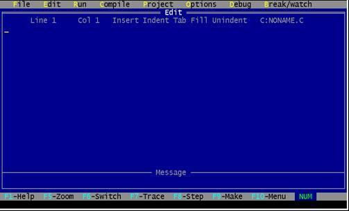
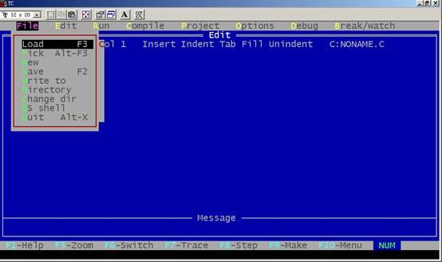

在Ｃ语言中使用的词汇分为六类：标识符，关键字，运算符，分隔符，常量，注释符等。
在程序中使用的变量名、函数名、标号等统称为标识符。除库函数的函数名由系统定义外，其余都由用户自定义。C 规定，标识符只能是字母(A～Z，a～z)、数字(0～9)、下划线(_)组成的字符串，并且其第一个字符必须是字母或下划线。
以下标识符是合法的：
a, x, x3, BOOK_1, sum5
以下标识符是非法的：
3s 以数字开头
s*T 出现非法字符*
-3x 以减号开头s
bowy-1 出现非法字符-(减号)
在使用标识符时还必须注意以下几点：
(1)标准C不限制标识符的长度，但它受各种版本的C 语言编译系统限制，同时也受到具体机器的限制。例如在某版本C 中规定标识符前八位有效，当两个标识符前八位相同时，则被认为是同一个标识符。
(2)在标识符中，大小写是有区别的。例如BOOK和book 是两个不同的标识符。
(3)标识符虽然可由程序员随意定义，但标识符是用于标识某个量的符号。因此，命名应尽量有相应的意义，以便于阅读理解，作到“顾名思义”。
关键字是由Ｃ语言规定的具有特定意义的字符串，通常也称为保留字。用户定义的标识符不应与关键字相同。Ｃ语言的关键字分为以下几类：
(1)类型说明符
用于定义、说明变量、函数或其它数据结构的类型。如前面例题中用到的int,double等
(2)语句定义符
用于表示一个语句的功能。如例1.3中用到的if else就是条件语句的语句定义符。
(3)预处理命令字
用于表示一个预处理命令。如前面各例中用到的include。
Ｃ语言中含有相当丰富的运算符。运算符与变量，函数一起组成表达式，表示各种运算功能。运算符由一个或多个字符组成。
在Ｃ语言中采用的分隔符有逗号和空格两种。逗号主要用在类型说明和函数参数表中，分隔各个变量。空格多用于语句各单词之间，作间隔符。在关键字，标识符之间必须要有一个以上的空格符作间隔，否则将会出现语法错误，例如把int a;写成 inta;C编译器会把inta
当成一个标识符处理，其结果必然出错。
C 语言中使用的常量可分为数字常量、字符常量、字符串常量、符号常量、转义字符等多种。在后面章节中将专门给予介绍。
C 语言的注释符是以“/*”开头并以“*/”结尾的串。在“/*”和“*/”之间的即为注释。程序编译时，不对注释作任何处理。注释可出现在程序中的任何位置。注释用来向用户提示或解释程序的意义。在调试程序中对暂不使用的语句也可用注释符括起来，使翻译跳过不作处理，待调试结束后再去掉注释符。
我们上机实习和将来考试都是使用Borland Turbo C 2.0这个版本。该系统是DOS操作系统支持下的软件，在windows 98环境下，可以在DOS窗口下运行。
我们机房是在D盘根目录下建立一个TC 子目 录下安装Turbo C 2.0系统的。 TC下还建立了两个了目录LIB和INCLUDE, LIB子目录中存放库文件, INCLUDE 子目录中存放所有头文件。
在DOS环境下或在windows 98的DOS窗口下运行运行Turbo C 2.0时, 只要在TC 子目录下键入TC并回车即可进入Turbo C 2. 0 集成开发环境。
在windows 98环境下，也可以选运行菜单，然后键入d:\tc\tc即可，也可以在tc文件夹找到tc.exe文件，然后用鼠标双击该文件名也可进入Turbo C 2. 0 集成开发环境。
Turbo C 是美国Borland 公司的产品,Borland公司是一家专门从事软件开发、研制的大公司。该公司相继推出了一套 Turbo系列软件, 如Turbo BASIC, TurboPascal, Turbo Prolog, 这些软件很受用户欢迎。该公司在1987年首次推出TurboC 1.0 产品, 其中使用了全然一新的集成开发环境, 即使用了一系列下拉式菜单, 将文本编辑、程序编译、连接以及程序运行一体化, 大大方便了程序的开发。1988年, Borland 公司又推出Turbo C1.5版本, 增加了图形库和文本窗口函数库等, 而Turbo C 2.0 则是该公司1989年出版的。Turbo C2.0在原来集成开发环境的基础上增加了查错功能, 并可以在Tiny模式下直接生成.COM (数据、代码、堆栈处在同一64K 内存中) 文件。还可对数学协处理器 (支持8087/80287/80387等)进行仿真。
Borland公司后来又推出了面向对象的程序软件包Turbo C++,它继承发展Turbo C 2.0 的集成开发环境, 并包含了面向对象的基本思想和设计方法。1991年为了适用Microsoft 公司的Windows 3.0 版本, Borland 公司又将Turbo C++ 作了更新, 即Turbo C 的新一代产品Borlandc C++也已经问世了。
进入Turbo C 2.0集成开发环境中后, 屏幕上显示:
|  |
主菜单在Turbo C 2.0主屏幕顶上一行, 显示下列内容:
File Edit Run Compile Project Options Debug Break/watch
除Edit外, 其它各项均有子菜单, 只要用Alt加上某项中第一个字母, 就可进入该项的子菜单中。
按Alt+F可进入File菜单, 如图:

File菜单的子菜单共有9项，分别叙述如下：
1. Load：装入一个文件, 可用类似DOS的通配符(如*.C)来进行列表选择。也可装入其它扩展名的文件, 只要给出文件名(或只给路径)即可。该项的热键为F3, 即只要按F3即可进入该项, 而不需要先进入File菜单再选此项。
2. Pick：将最近装入编辑窗口的8个文件列成一个表让用户选择, 选择后将该程序装入编辑区, 并将光标置在上次修改过的地方。其热健为Alt-F3。
3. New：新建文件, 缺省文件名为NONAME.C, 存盘时可改名。
4. Save：将编辑区中的文件存盘, 若文件名是NONAME.C时, 将询问是否更改文件名, 其热键为F2。
5. Write to：可由用户给出文件名将编辑区中的文件存盘, 若该文件已存在, 则询问要不要 覆盖。
6. Directory：显示目录及目录中的文件, 并可由用户选择。
7. Change dir：显示当前默认目录, 用户可以改变默认目录。
8. Os shell：暂时退出Turbo C 2.0到DOS提示符下, 此时可以运行DOS 命令, 若想回到 Turbo C 2.0中, 只要在DOS状态下键入EXIT即可。
9. Quit：退出Turbo C 2.0, 返回到DOS操作系统中, 其热键为Alt+X。
以上各项可用光标键移动色棒进行选择, 回车则执行。也可用每一项的第一个大写字母直接选择。若要退到主菜单或从它的下一级菜单列表框退回均可用Esc键, Turbo C 2.0所有菜单均采用这种方法进行操作, 以下不再说明。